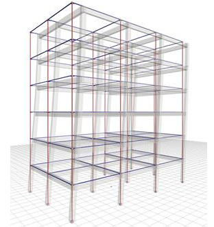
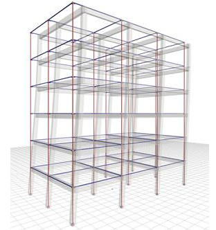

Πηγές έμπνευσης
Βασική έμπνευση για την εργασία μας αποτέλεσε το βιβλίο “Form + code in design, art, and architecture”, καθώς και έρευνες επιστημόνων που μελετούν φυσικά φαινόμενα. Το βιβλίο, ειδικά στο κεφάλαιο “Simulation” περιέχει πολλαπλά παραδείγματα προσομοίωσης φυσικών συστημάτων, τα οποία μας προκάλεσαν ενδιαφέρον. Ακόμη υπάρχουν και παραδείγματα οπτικοποίησης δεδομένων μέσω δυναμικών χαρτών. Βρήκαμε ιδιαίτερα ενδιαφέρουσα την ιδέα να ασχοληθούμε με κάτι απρόβλεπτο, όπως ο σεισμός, καθώς θεωρούμε ότι είναι ένα φαινόμενο το οποίο απασχολεί μεγάλο μέρος των ερευνητών. Επιπλέον, το μάθημα της Δομικής Μηχανικής II αποτέλεσε κι αυτό σημαντική πηγή έμπνευσης αφού μελετούμε το φαινόμενο του σεισμού. Συγκεκριμένα, μαθαίνουμε πώς ταλαντώνεται ένα κτίριο όταν υπόκειται σε σεισμό. Τέλος, αντλήσαμε έμπνευση και από την έννοια της παραμετρικοποίησης, την οποία δουλεύουμε στη διάρκεια του έτους. Η παραμετρικοποίηση πέρα του ότι είναι ένα βοηθητικό εργαλείο, αποτελεί έμπνευση για την δημιουργία ενός πλήρους λειτουργικού σεισμικού μοντέλου.


Σεισμός σε κτίριο
 

Η εφαρμογή μας
Για την εφαρμογή μας αξιοποιήσαμε έναν χάρτη στον οποίο ορίσαμε με κουκκίδες τις πρωτεύουσες των πέντε πιο σεισμογενών χωρών. Ο χρήστης πατώντας μία από τις κουκκίδες μεταφέρεται σε ένα νέο περιβάλλον, στο οποίο εμφανίζονται κάποιες πληροφορίες για τον ιστορικό σεισμό και η προσομοίωση των κτιρίων της πόλης όταν υπόκεινται σε αυτόν. Για τη δημιουργία της προσομοίωσης συνδυάσαμε τις γνώσεις μας από τη δομική και την πληροφορική και καταλήξαμε στην απεικόνιση των κτιρίων με springs systems. Κάθε μία μπάλα αντιστοιχεί στις πλάκες των ορόφων, ενώ οι γραμμές που τις συνδέουν είναι τα κατακόρυφα στοιχεία μίας φυσικής κατασκευής.